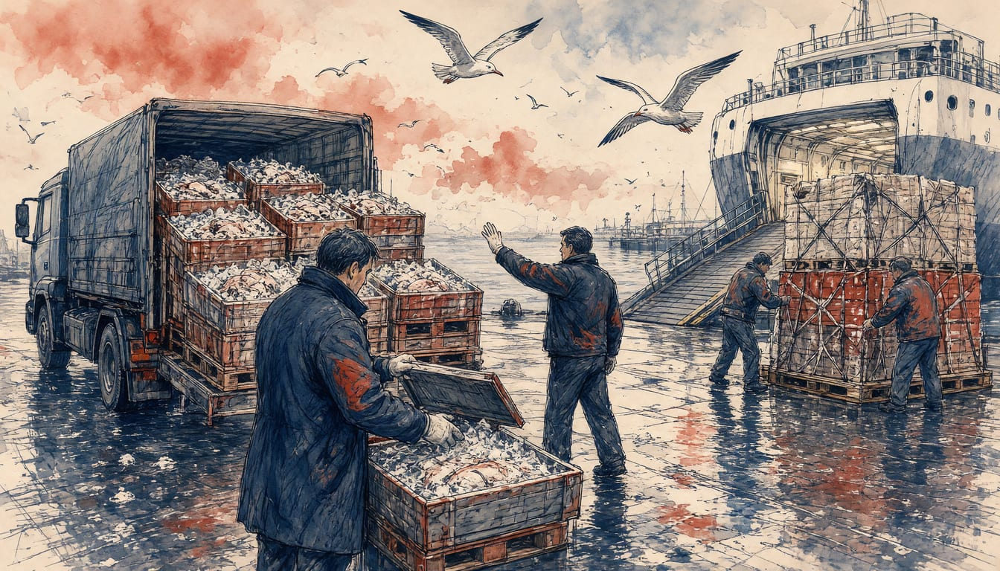

Easier food exports, linked carbon markets, a youth scheme: Burnham's three asks in Brussels
The Prime Minister targets food exports, emissions trading and a youth scheme, but rules out the single market, the customs union and free movement. The Stay Out campaign, chaired by a Vote Leave veteran, says rejoining would cost £750 million a week; a Centre for European Reform economist calls that figure misleading.

British Prime Minister Andy Burnham has called Brexit a failure and will ask the European Union for a closer deal at the summit in Brussels on 20 November. "The Brexit we were given has not worked. We have lost more than we have gained", he said in a speech on EU-UK relations on 16 November. He targets food exports, emissions trading and a "youth experience scheme", while ruling out the single market, the customs union and free movement.
The Stay Out campaign says that if Britain rejoined, it could pay £750 million a week into the EU, based on the Commission's proposed long-term budget of €2 trillion (£1.66 trillion). John Springford of the Centre for European Reform calls that figure misleading, as it ignores the money Britain gets back from EU funds. He calculates that staying outside costs £3 billion to £3.5 billion a week in lost income, plus £1 billion to £1.3 billion in forgone tax.
Stay Out, chaired by Oliver Lewis, a veteran of Vote Leave who negotiated Brexit under Boris Johnson, launched with a video. Former cabinet minister Michael Gove backs the group, and Dominic Cummings has called it “a good idea”, though he holds no formal role in it.
The proposed veterinary agreement would slash red tape for British food and drink exporters. British and EU negotiators agreed to a clause requiring either side to pay compensation if they withdraw, according to The Times. The draft text would also require Britain to "dynamically align [with] and simultaneously apply" new rules on animal and plant products. In January, EU diplomats dubbed a similar exit clause the "Farage clause", after Reform UK leader Nigel Farage. UK sources rejected that framing, saying exit provisions are "a basic staple of any international trade agreement" and would work both ways.
Burnham says the nature of any long-term relationship with the EU will ultimately be decided by voters. Reform UK leader Nigel Farage has said he would scrap the reset deal, and Reform and the Conservatives both promise to overturn the dynamic alignment.